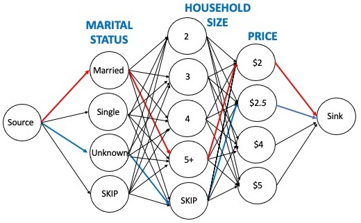
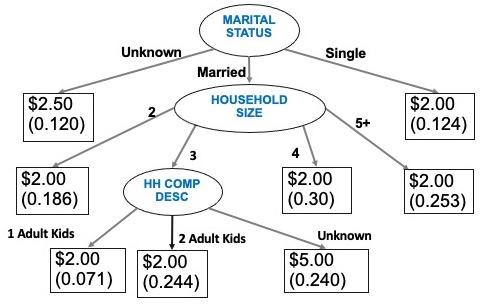
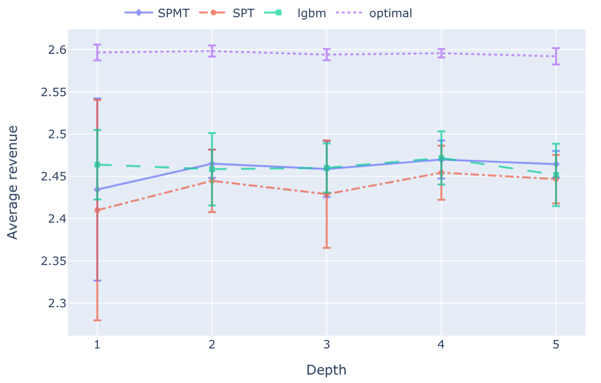
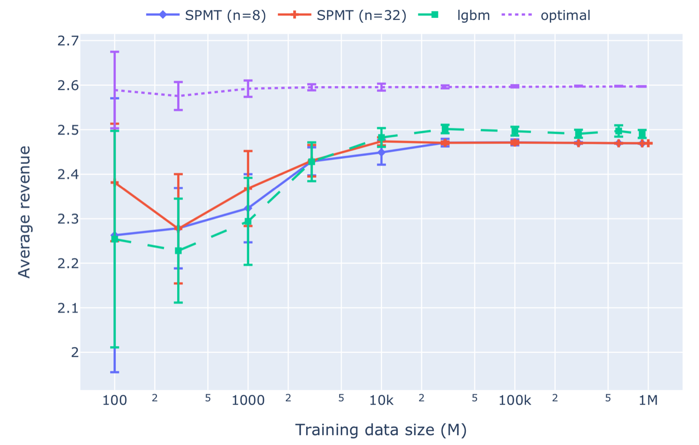

- 経路＝ルール＝列特徴の値をノードにした多層のグラフで、始点から終点への経路を 1 本のルールとみなす。SKIP ノードを通ればその特徴を使わない。経路を列とする集合分割問題を解くと、標本が重ならない多分岐の木が得られる（定理 1）。
- 3,000 未満32 本のルール、100 万標本の実験で、Master-MIP の二値変数は 3,000 未満だった。木を丸ごと解く既存の MIP なら \(32\times10^6\) を超える二値変数が要る、と論文は述べる。
- 82.8% → 47.49%イチゴの価格設定（64 ルール）で、過去の価格と比べた収益の増加率は制約なしで 82.8%。店舗群ごとに予測需要の変化を過去の 25% 以内に抑えると 47.49% だった。
処方的な木は解釈しやすいが、既存の手法は複数のルールにまたがる業務上の制約を扱えない
処方的分析は予測モデルの出力を使って、これからとるべき行動を決める。価格設定なら過去の販売データから需要を推定して価格を決め、医療なら過去の患者の反応から治療を選ぶ。論文はその特徴として制約を挙げる。収益を最大にする価格でも、生じる需要が生産能力を超えてはいけない。患者が選べる治療は既往症で限られることがある。
方策を解釈しやすくする方法として、根から葉への経路をルールとし、葉の標本に同じ行動を割り当てる処方的な木が研究されてきた。予測を木の学習に組み込む方法（Kallus 2017、Bertsimas ら 2019）と、予測と処方を分ける方法（Zhou ら、Amram ら、Biggs ら 2021）がある。木の作り方も貪欲に作る方法と最適に作る方法に分かれる。しかし論文によれば、どの既存手法も業務上の制約を扱えない。論文は、複数のルールにまたがる制約を扱える処方的な木を提案するのは自分たちが初めてだと考えている。
予測モデルが行動ごとの結果を推定し、木はその推定値の合計が最大になるルールを選ぶ
データは観察データ \(\{(x_i,\pi_i,y_i)\}_{i=1}^M\) で、\(x_i\) は特徴、\(\pi_i\) は離散の集合 \(\Pi\) から選ばれた行動、\(y_i\) は結果である。未観測の交絡はないと仮定する。価格設定の例では \(x_i\) が顧客の特徴、\(\pi_i\) が価格、\(y_i\in\{0,1\}\) が購入の有無で、目的は期待収益 \(\pi f(x,\pi)\) である。
論文は「予測する教師と処方する生徒」の枠組みをとる。まず教師となる予測モデル \(\hat f\) を学習し、各標本 \(i\) と各行動 \(\pi\) について反実仮想の結果 \(g_{i,\pi}=g(\hat f(x_i,\pi))\) を推定する。生徒の木はこの推定値を入力として受け取り、その合計を最大にする。教師には lightGBM のような強い予測モデルや二重頑健な推定量など、用途ごとに最もよいものを選べる。生徒は葉の数 \(n\) の多分岐の木 \(\mathcal T_m(n)\) で、論文はこの問題を SPMT（student prescriptive multiway-split tree）と呼ぶ。
生徒が使う特徴は、教師が使う特徴の一部でもよい。プライバシーや公平性の理由で個人の特徴をルールに使いたくない場合でも、すべての特徴で学習した教師の推定値を使える。葉の数 \(n\) の多分岐の木は、深さ \(k\) で \(2^k=n\) の葉をもつ二分木と比べられる。多分岐の木では同じ特徴が 1 本の経路に 2 回以上現れることがまれで、ルールが短く読みやすい、と論文は述べている。
ルールを特徴グラフ上の始点から終点への経路として表し、SKIP ノードで特徴を使わないルールも表す
特徴ごとに 1 つの層を作り、その特徴の値をノードにした多層の有向グラフ \(G(V,E)\) を考える。隣り合う層のノードはすべてつながり、最後の層は行動（価格）のノードである。行動以外の各層には SKIP ノードを加える。SKIP を通る経路はその特徴をルールに使わない。こうすると、特徴のあらゆる組み合わせが始点から終点への経路として表せる。ノードの数は特徴の数 \(d\) に比例するが、経路の数は \(d\) について指数的に増える（命題 1）。
数値の特徴は区間に離散化する。区間を重ねてもよい「累積ビン」を使えば、二分木の \(x\le 0.67\) のような条件も表せる（補足資料）。グラフでの特徴の並び順は目的関数の値には影響しないが、読みやすさに影響する。論文は教師モデルの特徴の重要度（SHAP など）の順に並べている。


経路を列とする集合分割問題で n 本のルールを選ぶと、標本の重ならない多分岐の木になる
ルール（経路）を \(j=1,\dots,N\)（\(N=|\mathcal P|\)）とし、ルール \(j\) に当てはまる標本の集合を \(S_j\)、その標本に割り当てる行動を \(q_j\in\Pi\) とする。ルールの価値は \(r_j=\sum_{i\in S_j} g_{i,q_j}\) である。\(a_{ij}\) は標本 \(i\) がルール \(j\) の条件を満たせば 1、そうでなければ 0 をとる。二値変数 \(z_j\) でルールを選ぶ。
1 つ目の制約が集合分割の制約で、十分大きな罰則 \(c_i\) をつけた非負のスラック \(s_i\) とあわせて、各標本がちょうど 1 本のルールに入るようにする。2 つ目の制約でルールの数を \(n\) 以下にする。論文は、この問題（SPP）で選ばれた経路が SPMT の最適な木 \(\mathcal T_m^*(n)\) に対応することを示す（定理 1）。SPP は NP 困難だが、中規模なら（ほぼ）最適な解が実用上得られることが知られている。問題は候補の経路の数 \(N\) が大きすぎて、すべてを列として書き出せないことである。
緩和した主問題の双対から被約費用を求め、K 最短路問題で被約費用が正の経路だけを足していく
列生成では、経路の一部 \(\hat N\) だけを使い、\(z_j\) を \(0\le z_j\le 1\) に緩和した制限主問題（RMP）を解く。集合分割の制約と個数の制約の双対変数を \(\lambda_i\)、\(\mu\) とすると、経路 \(j\) の被約費用は次のとおりである。
被約費用が正の経路は、RMP に加えると目的関数を改善しうる。被約費用の大きい \(K\) 本の経路を探す問題は、経路の費用を被約費用の符号を反転したものとする特徴グラフ上の K 最短路問題（KSP）になる。正の経路がなくなれば、SPP の LP 緩和の最適解に収束したことになる。実際には、双対解が収束するか反復の上限に達するまで RMP と KSP を繰り返す。そのあと \(z\) に二値の条件を戻した Master-MIP を CPLEX で解き、（ほぼ）最適なルールの集合を得る。MIP の最適解まで求めたいときは、分枝価格法に切り替えればよいとも述べている。
業務上の制約は 2 種類に分けて扱う。ルール内の制約（特定の特徴の組み合わせを禁じる、使う特徴の数を限るなど）は 1 本の経路だけで決まるので、KSP で部分経路を延ばすときの可否の判定として扱う。非線形な条件でもよい。ルール間の制約は複数のルールにまたがる線形の不等式で、ルールの個数の制約もその一例である。これは RMP に制約として加え、その双対変数が被約費用を変えることで部分問題に影響する。補足資料では、郵便番号の地域ごとに予測価格の平均を過去の \(\pm10\%\) に収める制約を例に、被約費用に双対変数の項が加わる式を示している。KSP の計算量は \(O(K|V|^2 M\log M)\) で抑えられる（補足資料）。
合成データでは貪欲な SPT をおおむね上回り、100 万標本でも約 1 時間でほぼ最適な解に収束した
Biggs ら（2021）と同じ設定で、需要モデルの異なる 6 つの合成データ（数値の特徴のみ）を作る。教師は lightGBM、行動は観測された価格の 10〜90 パーセンタイルを 10% 刻みにした 9 つの価格である。比較対象は、Biggs らが他の処方的な木（Kallus 2017、Athey と Imbens 2016）より良いと示した貪欲な生徒処方木 SPT、教師 lightGBM の標本ごとの最適な価格（LGBM）、真の需要モデルでの最適な価格（OPTIMAL）である。既存の木の手法は制約を扱えないため、比較は制約なしの設定に限られる。ルールあたりの最小標本数は 10、\(K=100\) とした。
| データ | OPTIMAL | LGBM | SPMT n = 8 | SPT k = 3 | SPMT n = 32 | SPT k = 5 |
|---|---|---|---|---|---|---|
| 1 | 3.275 (0.016) | 3.161 (0.054) | 3.233 (0.038) | 3.201 (0.071) | 3.201 (0.053) | 3.188 (0.063) |
| 2 | 2.963 (0.034) | 2.716 (0.038) | 2.166 (0.034) | 2.127 (0.042) | 2.378 (0.015) | 2.277 (0.039) |
| 3 | 3.420 (0.006) | 3.275 (0.064) | 3.347 (0.048) | 3.331 (0.052) | 3.336 (0.047) | 3.333 (0.047) |
| 4 | 3.492 (0.012) | 3.344 (0.057) | 3.365 (0.051) | 3.343 (0.079) | 3.379 (0.055) | 3.366 (0.06) |
| 5 | 3.35 (0.007) | 3.260 (0.029) | 3.291 (0.056) | 3.260 (0.067) | 3.296 (0.017) | 3.287 (0.022) |
| 6 | 2.592 (0.01) | 2.456 (0.033) | 2.459 (0.033) | 2.429 (0.064) | 2.464 (0.016) | 2.447 (0.029) |
表1 合成データでの実現した平均収益（\(M=5000\)、10 回の平均、括弧内は標準偏差。論文 Table 1、arXiv v1）。SPMT と比べられる SPT は、葉の数が同じ（\(n=2^k\)）完全な二分木である。
表の 12 の組み合わせすべてで SPMT の平均が SPT を上回ったが、差は小さく、標準偏差より小さいものも多い。論文も「控えめな改善」と書いている。両者は同じ教師を使うので、差は貪欲に作るか最適化で選ぶかの違いによる、というのが論文の説明である。


データの大きさを変えた実験では、標本数が \(3\times10^4\) を超えると \(n=8\) と \(n=32\) の方策が同じ収益に収束し、それ以上増やしても改善は見られなかった。LGBM は理論上 SPMT の上界だが、方策が解釈できず、標本ごとに異なる価格のように非常に複雑になりうる。SPT は既存の実装が大きなデータを扱えないため、この実験から外されている。
計算時間については、すべての RMP が 20 反復未満で収束し、RMP と KSP の 1 反復は平均 11.19 秒（標準偏差 1.33）だったと本文は書いている。100 万標本では KSP が平均約 166 秒、RMP が 45 秒以内で解け、約 1 時間でほぼ最適な解に収束した（補足資料）。100 万標本・最大 32 ルールの実験で、Master-MIP の二値変数は 3,000 未満だった。木を丸ごと解く既存の MIP（Bertsimas ら、Amram ら）は \(O(2^k M)\) の二値変数を要するので、\(32\times10^6\) を超える。
補足資料では、特徴が多いデータ 2 の 100 万標本で、ありうるルールが 330 万を超える場合も調べている。教師の予測で標本ごとに最良の価格を選んだ値を上界として、そこからの差は \(n=32\) で 10.281%（約 65 分）、\(n=8\) で 17.033%（約 39 分）だった。生成した経路は 3,000 本未満で、ありうるルール全体の 0.1% に満たない。この上界は \(n\) が小さいと達成できない値で、得られた LP の値も大域的な最適値の上界ではない、と論文は断っている。
制約を入れると、需要や地域の価格の条件を守るルールが得られ、そのぶん予測される改善は小さくなる
イチゴの価格設定 食料品店の約 2,500 世帯の購買記録（Dunnhumby）から作った 97,295 行のデータを使い、半分で教師、残り半分で評価用の lightGBM を学習する。64 ルールの SPMT は過去の価格と比べて収益を 82.8% 増やした。同じデータで Biggs らは 65.9%、Amram らは 77.1% を報告している。論文はこの差を、多分岐の木が二分木より情報を多くもつことの利点とみている。ただし制約なしの方策は、過去の中央値 $2.99 に対してほとんどの層に $2 への値下げを勧め、予測需要は過去より 99.94% 多くなった。傷みやすい商品で供給にも限りがあるので、このような需要の急増は現実的でも望ましくもない。また、個人の特徴で価格を変えることには法律や公平性の懸念がある。
そこで 311 店舗を過去の売上で 5 つの群に分け、群ごとに予測需要の変化を過去の値の一定割合以内に抑える。許す変化を 50% にすると収益は 61.72%、25% にすると 47.49% 増えた。別の設定では、店舗 ID とロイヤルティカードの有無だけでルールを作り、同じ店舗の客には同じ価格をつけ、カード会員には同じかより低い価格をつける制約を課した。この方策は収益を 65.4% 増やした。論文によれば、このような特徴の値の論理的な組み合わせの制約は経路の定式化では自然に書けるが、木を特徴の分岐ごとに表す既存の定式化では効率よく書きにくい。
住宅の等級 Kaggle の住宅価格データで、教師は属性から売値を予測する回帰モデルである。建築の等級（1〜13）を行動として変える。制約なしの方策は全戸を最高等級にする 1 本のルールになり、テストデータで予測売値が 124% 増えた。郵便番号の上 4 桁が同じ地域（19 か所）ごとに予測売値の平均を過去の \(\pm10\%\) に収める制約を入れると、ルールは床面積・築年数・浴室数に応じて等級を上げ下げする組み合わせになり、予測売値の増加は 9.74% だった。等級を上げる費用を予測売値の上昇の 70% とし、全体の費用の変化をほぼ 0 にする設定（8 ルール以内）では 7.82% だった（補足資料）。
航空会社のプレミアム席の価格 ある航空会社の 130 万件を超えるデータで、複数の席種の価格を行動のノードとして積み重ね、ビジネス席はファースト席より少なくとも $250 安くするといった条件を制約として書ける。制約なしの方策は予測収益が上界の 12% 以内に入ったものの、今の 2 倍を超える座席を売る必要があり、容量を大きく超えていた。市場ごとの容量制約を加えると、25% を超える予測収益の改善を保ったまま、より実現しやすいルールになったという。詳細は守秘のため省かれている。
木を分岐ごとではなく根から葉への経路の集合として表し、列生成で必要な経路だけを作る処方的な木
- 分岐の種類：単変量の多分岐。各ノードが 1 つの特徴の値（数値の特徴は重なりを許す区間）に対応し、SKIP でその特徴を使わないこともできる。最後の層で行動（価格など）を選ぶ。
- 目的関数：教師の予測モデルが推定した反実仮想の結果 \(g_{i,\pi}\) の、選んだ行動についての合計（期待収益や予測売値）。ルールの数を \(n\) 以下にする。教師の選び方は問わず、実験ではすべて lightGBM などの予測モデルを使っている。
- 制約：ルール内の制約（KSP の中で判定、非線形でもよい）と、ルール間の線形制約（店舗群ごとの需要、地域ごとの価格、全体の費用、ロイヤルティ価格、市場ごとの座席容量など）。
- 解き方：経路を列とする集合分割の MIP。LP 緩和を列生成（RMP と K 最短路の部分問題）で解き、最後に Master-MIP を CPLEX で解く。
- 最適性の保証：SPP の最適解が多分岐の木の最適解に対応すること（定理 1）は示されている。しかし実装は列生成を収束か上限で止めたあと Master-MIP を解くヒューリスティックで、得られる木は（ほぼ）最適とされるにとどまる。厳密に解くなら分枝価格法が必要だと論文は述べる。
- データ：Biggs らの 6 つの合成データ、Dunnhumby のイチゴの購買データ、Kaggle の住宅価格データ、航空会社の非公開データ。合成データでは 100 万標本まで扱った。
同じリストの OPT や Policy Trees は二分木の分岐を変数にする定式化（論文の言う arc-based）で、変数の数が標本数に比例して増える。この論文はルールそのものを変数にすることで、二値変数の数を標本数から切り離した。予測と処方を分ける点は Policy Trees や Zhou らと共通だが、そちらは二重頑健な推定値を使い、この論文の実験は予測モデルの推定値をそのまま使う。Jo らも処方的な木を MIO で解くが、そちらはフローにもとづく定式化である。
（解説者の注）集合分割の制約が保証するのは、選んだルールが学習データの標本について重ならないことである。重ならないルールの集合を 1 本の多分岐の木として並べられることは定理 1 で主張されているが、補足資料の証明は短く、特徴の並び順との関係などは本文から詳しく読み取れなかった。また、目的関数は教師の予測値の合計なので、方策の良さは教師の推定の正しさに依存する。合成データでは真の需要モデルで、実データでは別に学習した評価用モデルや教師の予測で評価している。
このページの数値・定理番号・式は arXiv 版（2207.10163v1、補足資料つき）による。AAAI の出版版の PDF は自動取得できなかったため、照合していない。Crossref にある出版版の要旨は arXiv 版と細かな言い回しが異なる。書誌は Crossref で確認した。補足資料の Table 1 は行の見出しの並びが崩れて見えるため、本文の記述（\(n=32\) で 10.3%、\(n=8\) で 17%）に合わせて読んだ。
@inproceedings{subramanian2022constrained,
title = {Constrained Prescriptive Trees via Column Generation},
author = {Subramanian, Shivaram and Sun, Wei and Drissi, Youssef and Ettl, Markus},
booktitle = {Proceedings of the AAAI Conference on Artificial Intelligence},
volume = {36},
number = {4},
pages = {4602--4610},
year = {2022},
doi = {10.1609/aaai.v36i4.20384}
}